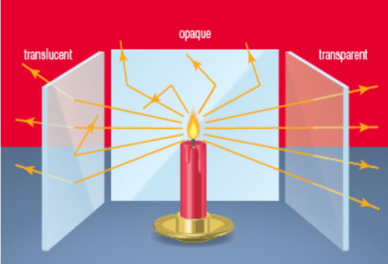
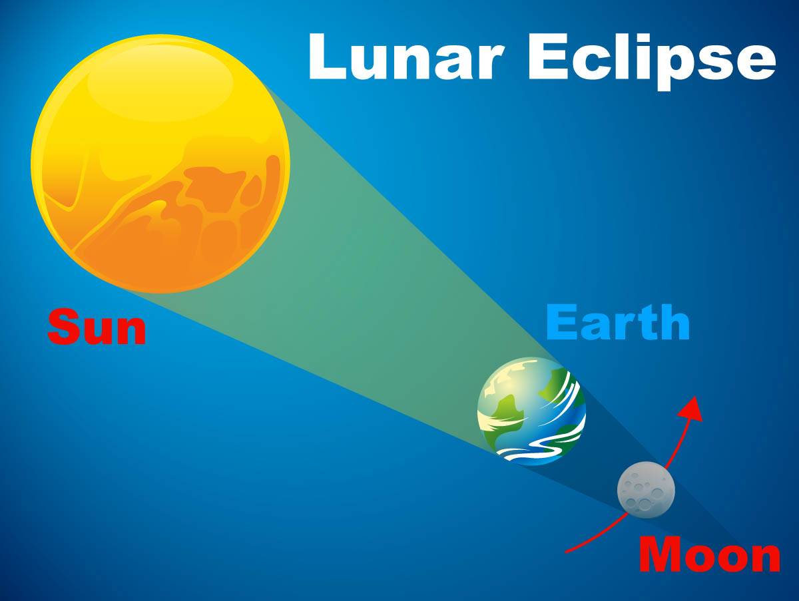
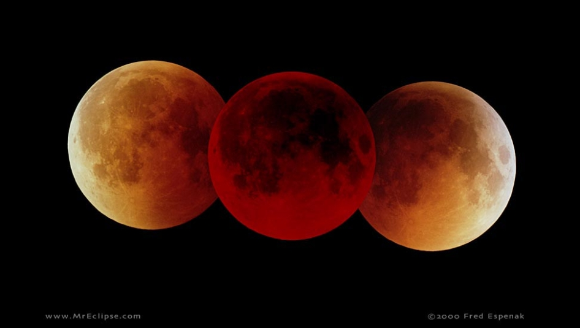
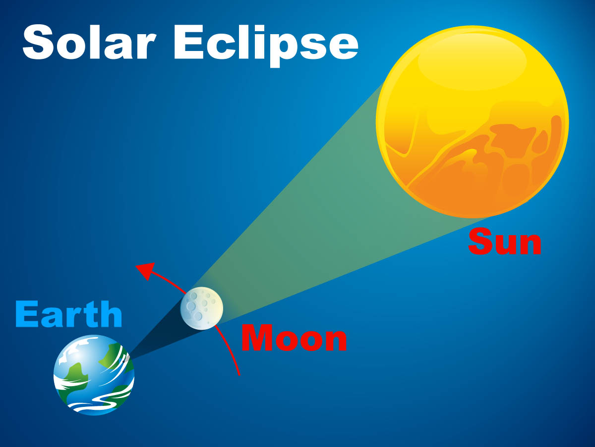
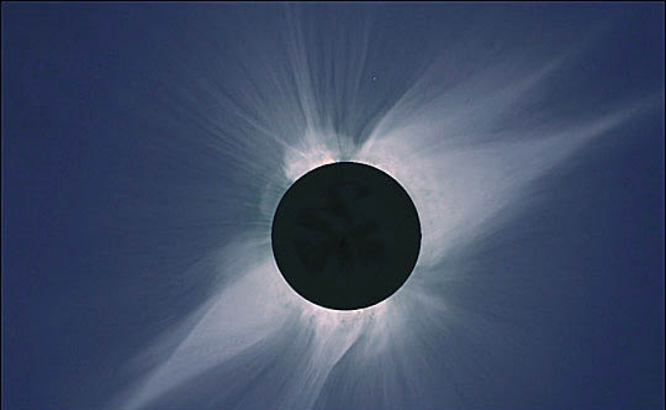
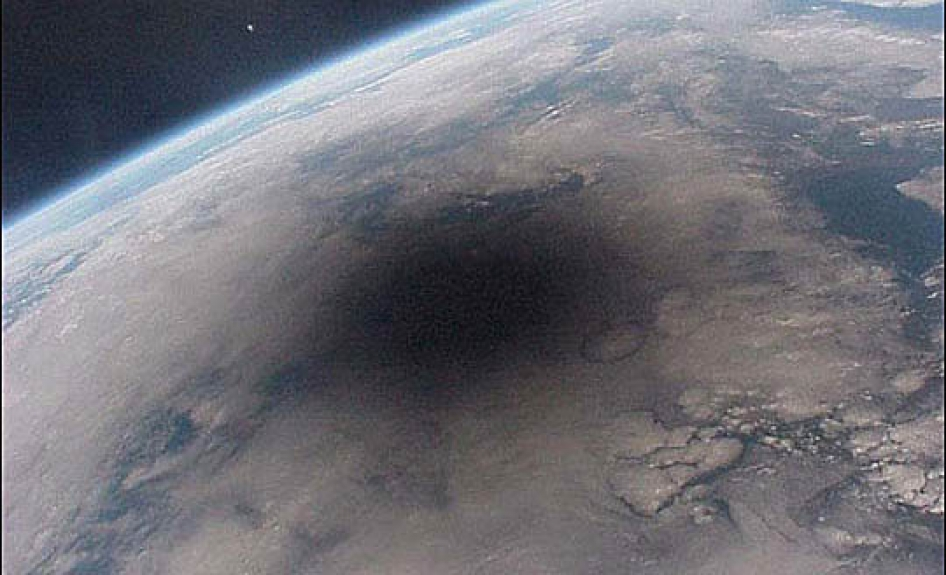

layout: false
class: center, middle, inverse

# Topic 1 (Part 2): What is light?
## Unit: Light and Optical Systems
### www.drpineda.ca
---
name: base
layout: true
---
# The Cost of Light
- Electrical energy is measured in Watts (W).  
- 1 kiloWatt (kW) = 1000 W
- Electricity currently costs about $0.08 per kWh

## Calculating the Cost of Light
- Calculating kWh: $ \mbox{kW used} \times \mbox{hours used} = \mbox{kWh} $
- Calculating cost: $ \mbox{Cost per kWh} \times \mbox{kWh} = \mbox{total cost} $
---
# The Cost of Light: Example 1
How much would it cost if you used a 100 W light bulb for 12.5 hours? 
---
#  The Cost of Light: Example 2
If four bulbs at 175 Watts each burn for 45 minutes, how much is the total cost if electricity is $0.089/kWh?
---
# Properties of light
- Some rays can go through translucent materials and other rays can not. 
- Translucent materials scatter light, allowing only some rays to go through and others are bent away. That`s why you see only blurry images through translucent materials, e.g. shower doors, frosted windows, some plastics, sometimes water with sediments or shaken.

- Light travels in a straight line until something bends it. 
- Opaque materials blocks all light from going through, creating shadows, e.g. any solid materials that you cannot see through
---
# The Ray Model of Light
The ray model of light explains how light shines and behaves when it comes in contact with objects

It says that light travels in all directions and in a straight line called a light ray, therefore light will not bend around corners.  Since it shines straight on, it creates a shadow.

A ray diagram shows how this works 

Rays can go through clear or transparent materials like clean clear water, clean clear glass, eye lens, clean clear air, cellophane
---

---

---
# Total Lunar Eclipse

---

---
# Total Solar Eclipse

---
# Moon Shadow

